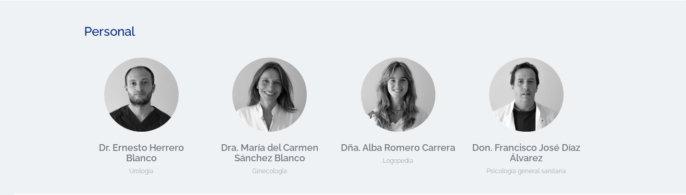

Clínica privada de especialidades médicas
Nuestra principal motivación es conseguir la satisfacción y bienestar del paciente. Formada por un equipo joven y dinámico, que cuenta con los servicios de los mejores y más prestigiosos médicos del Principado. Especialistas de alto nivel de preparación y larga trayectoria en el sector.
*Actualmente fuera de servicio debido a la situación provocada por el COVID-19. Servicio de enfermería a domicilio: incluye dos visitas semanales a domicilio para control del paciente crónico, supervisión de medicación, control de constantes, realización de curas y cuidados propios del servicio de enfermería. Se realizará los martes / jueves a última hora de la mañana, con posibilidad de variación según demanda y disponibilidad.
 Creada en Octubre, 2020